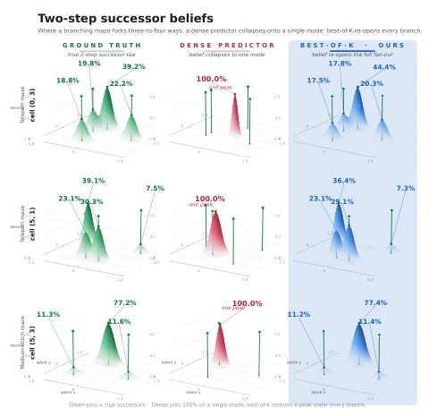
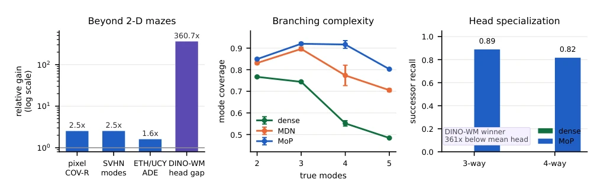
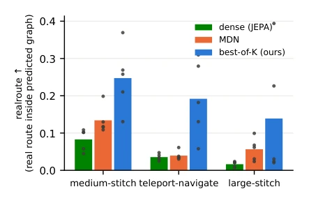
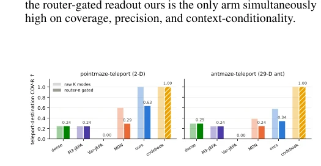
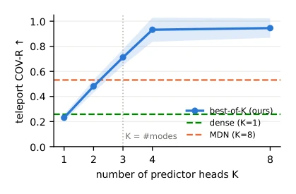

This paper pours cold water on JEPA world models: deterministic prediction in stochastic environments is a disaster of "average-ism". The authors sharply point out that single-head predictors collapse to the conditional mean, generating a non-existent "ghost state", leading to planning failure. MoP-JEPA uses a hard-assignment mixture predictor to forcibly "quantize" multimodal futures; although essentially a K-means variant, it indeed cures "planning hallucination" within the JEPA framework. However, soft mixture models like MDN, despite high coverage, are full of hallucination edges; the realroute validation protocol designed in the paper is the true litmus test. Limitations lie in that rare branches might be missed, and video-level extension still needs verification.
研究动机Motivation
LeCun (2022) 提出的 JEPA 蓝图强调潜变量承载多模态未来信息，但现有系统如 V-JEPA (Assran et al. 2025) 和 DINO-WM (Zhou et al. 2024) 仍用确定性回归，忽略了随机性。在分支环境中，单头预测器输出均值，对应无效状态。M3-JEPA (Lei et al. 2024) 的门控 MoE 虽有多专家，但加权求和后仍坍缩为单向量。Var-JEPA (Huang et al. 2026) 引入变分高斯，但无法分离离散模式。规划需要枚举模式而非采样，现有方法缺乏可审计的接口，导致规划成功率极低。本文旨在解决这一结构性错配，提供可验证的多模态预测接口。
The JEPA blueprint proposed by LeCun (2022) emphasizes that latent variables carry multimodal future information, but existing systems such as V-JEPA (Assran et al. 2025) and DINO-WM (Zhou et al. 2024) still use deterministic regression, ignoring stochasticity. In branching environments, single-head predictors output the mean, corresponding to invalid states. The gated MoE in M3-JEPA (Lei et al. 2024) has multiple experts, but still collapses to a single vector after weighted summation. Var-JEPA (Huang et al. 2026) introduces variational Gaussian, but cannot separate discrete modes. Planning requires enumerating modes rather than sampling; existing methods lack auditable interfaces, resulting in extremely low planning success rates. This paper aims to resolve this structural mismatch and provide a verifiable multimodal prediction interface.

Figure 2: Two-step successor beliefs at high-branching cells. Rows: three cells whose two-step successor law has three or four valid modes. Columns: empirical ground truth (green), the dense single predictor (red), and MoP-JEPA (blue). Each panel is the local 2-D latent plane spanned by the true suc- cessor embeddings; floor axes give the latent coordinates, and the vertical coordinate is unit-normalized predictive density. Green pins mark true successor latents. Percentages in the left column are empirical two-step branch frequen- cies; percentages in the right column are router weights πk for active heads. The dense predictor collapses to one peak, while MoP-JEPA re-opens the multimodal fan-out with one predicted peak per branch.

Figure 4: Evidence chain before benchmark scores. Left: beyond 2-D mazes, MoP improves the appropriate domain metric (coverage for pixel/SVHN, inverse ADE for ETH/UCY); in DINO-WM, the winning head is hundreds of times closer than the mean head, showing specialization in the official world-model code. Middle: as the true number of modes grows in a controlled conformer branch sweep, dense coverage degrades fast, MDN partially covers, and hard-assigned MoP remains highest. Right: on real two-step maze branchings, dense recovers no successor modes while MoP recovers most 3/4-way successors; this is the empirical specialization predicted by Prop. 3.
方法Method
整体 Pipeline 沿用 JEPA 标准：编码器 fθ 提取潜变量 z，目标编码器 fξ 提供 z'。创新在于预测器 g 替换为 K 个预测头 {gk} 和上下文路由器 rψ。训练采用硬分配目标：对每个样本，计算各头距离，仅更新最近头（Best-of-K），同时训练路由器预测获胜头索引。Loss 包含回归项、路由器交叉熵和负载均衡项。这本质是潜空间的 K-means 量化，迫使每个头收敛到特定模式。推理时，模型输出 K 个候选潜变量及其路由权重，形成可枚举的转移图。验证协议引入 realroute 指标：模型盲猜转移图，仅用真值检查路径是否存在，杜绝覆盖率“蹭分”。
The overall pipeline follows JEPA standards: encoder fθ extracts latent variable z, target encoder fξ provides z'. The innovation lies in replacing predictor g with K prediction heads {gk} and a context router rψ. Training adopts a hard-assignment target: for each sample, compute distances for each head, update only the nearest head (Best-of-K), while training the router to predict the winning head index. The Loss includes regression term, router cross-entropy, and load balancing term. This is essentially K-means quantization in latent space, forcing each head to converge to a specific mode. During inference, the model outputs K candidate latent variables and their routing weights, forming an enumerable transition graph. The validation protocol introduces the realroute metric: the model blindly guesses the transition graph, using ground truth only to check if paths exist, eliminating coverage "score-padding".

Figure 6: Verified routes by task (bars: mean; dots: seeds).
Based on OGBench offline data (Park et al. 2025), including pointmaze and antmaze. Baselines cover Dense JEPA, M3-JEPA, Var-JEPA, and MDN (Bishop 1994). Core metrics are planAll (graph searchability) and realroute (real path verification). MoP-JEPA significantly outperforms MDN on realroute (0.247 vs 0.134); although MDN has high coverage, its precision is low (0.14-0.21), and planning paths are mostly hallucinations. Ablation shows coverage plateaus when K value equals the number of modes. Generalization was validated on DINO-WM and ETH/UCY. Conclusion: hard-assignment heads restore the real transition graph, while soft mixture models cannot support long-horizon planning.

Figure 8: Raw (light) vs. router-gated (solid) coverage on pointmaze and 29-D antmaze.
其他图片Other Figures

Figure 9: K-sweep on real data (teleport COV-R): coverage rises until K equals the number of modes, then plateaus, with no penalty for over-provisioning, as Prop. 3 predicts.